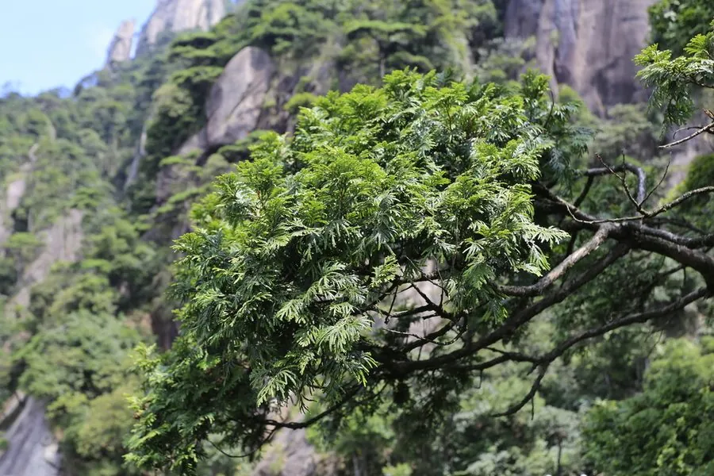

乔木 · 植物界
福建柏 Fokienia hodginsii

柏科福建柏属常绿乔木，小枝扁平、鳞叶交叉对生，是单种属植物，木材耐腐芳香，被列为国家二级保护植物。
- 分类
- 门裸子植物门纲松纲目松柏目科柏科属福建柏属
- 栖息环境
- 海拔 800–1800 米的山地常绿阔叶林中，喜温暖湿润半阴
- 地理分布
- 中国浙江、福建、江西、湖南、广东、广西、四川、贵州、云南；越南北部
- 保护级别
- 国家二级重点保护野生植物；IUCN 暂无评估
物种志
福建柏为柏科福建柏属常绿乔木，高十七至二十米，树皮紫褐色、呈长条片状剥落，树冠塔形。小枝扁平，排成一平面，鳞叶交叉对生，两侧的鳞叶较大，先端尖，叶面深绿有光泽，背面有白色气孔带。雌雄同株，球花单生枝顶，花期三至四月；球果近球形，成熟时红褐色，种鳞木质，果期十至十一月。
福建柏分布于浙江、福建、江西、湖南、广东、广西、四川、贵州、云南等地，越南北部也有，多生于海拔八百至一千八百米的山地常绿阔叶林中。它喜温暖湿润和半阴环境，适宜深厚肥沃、排水良好的酸性土壤，生长较慢。木材纹理直、结构细、耐腐且具芳香，是建筑、家具和工艺品的优良用材；树形优美，可作庭园树。由于野生资源减少，被列为国家二级重点保护野生植物。
形态与习性
- 株高17–20 m，树冠塔形
- 花期3–4 月，球花单生枝顶
- 果期10–11 月，球果红褐色
- 光照幼树耐阴，成树喜光
- 水分喜湿润，忌干旱瘠薄
- 土壤深厚肥沃的酸性土
- 主要用途建筑、家具用材，庭园树
趣味知识
- 福建柏属只有福建柏一种，是柏科中的单种属。
- 它的鳞叶扁平、小枝排成一平面，与侧柏相似但叶背气孔带更明显。
- 福建柏木材耐腐且带香气，在闽北山区常被用作建筑的梁柱材料。